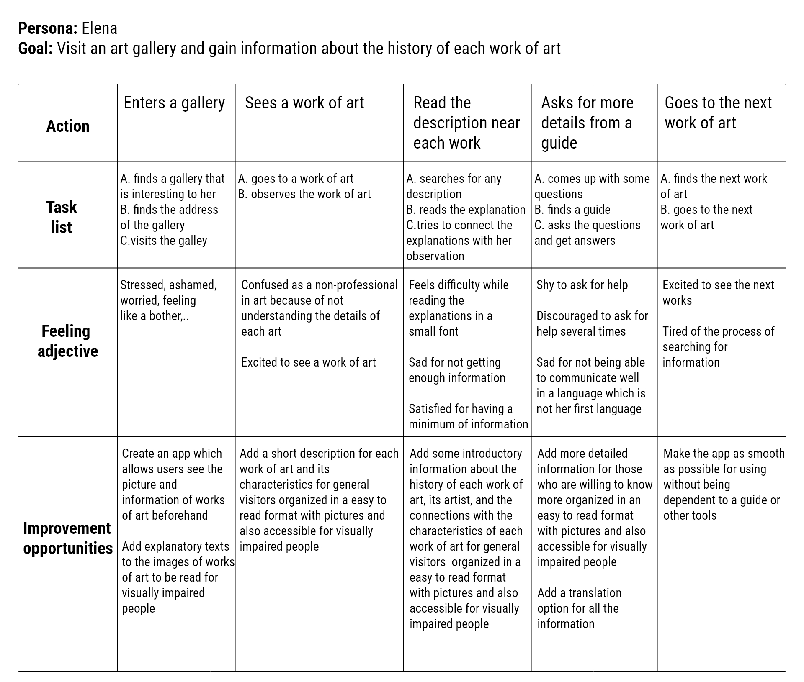
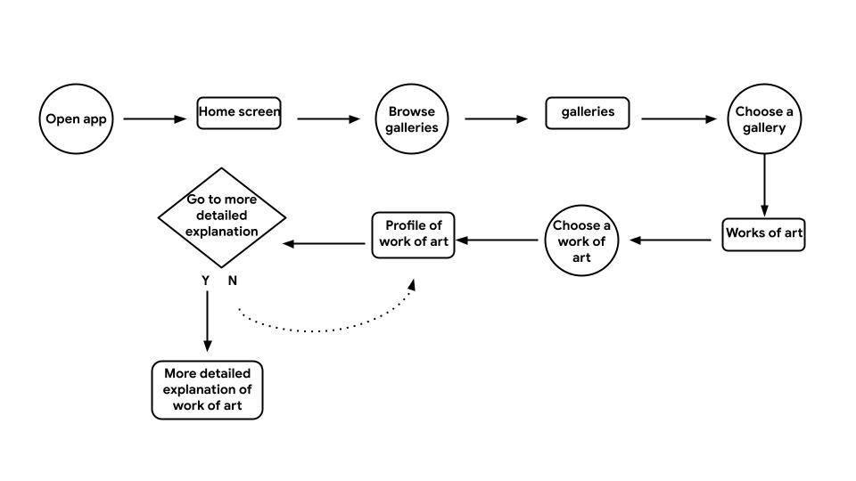
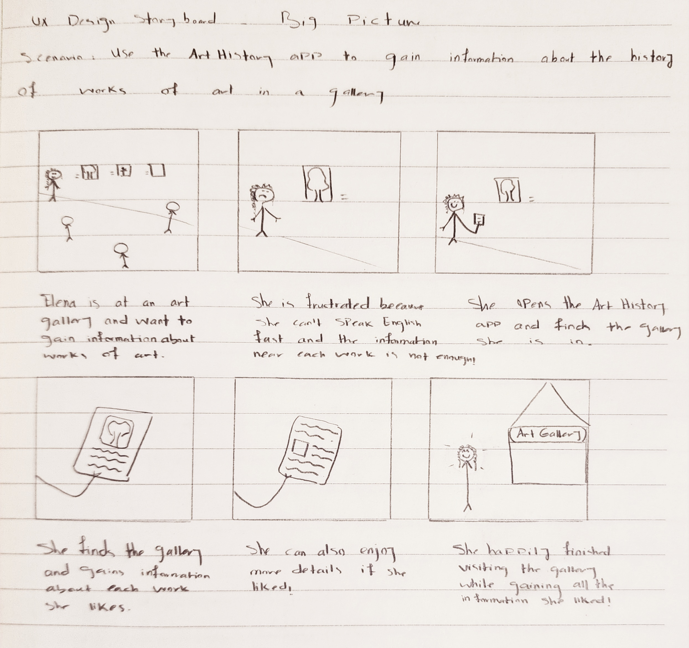
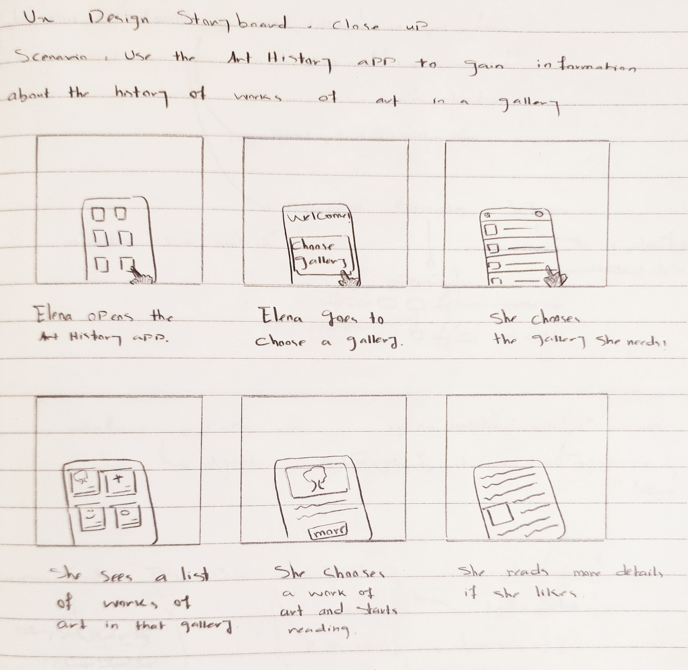
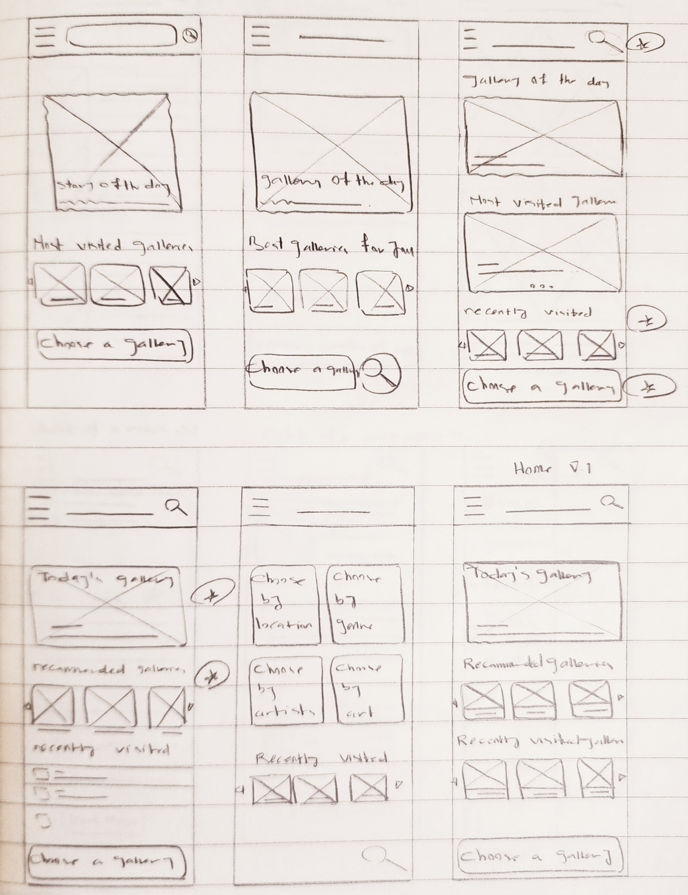
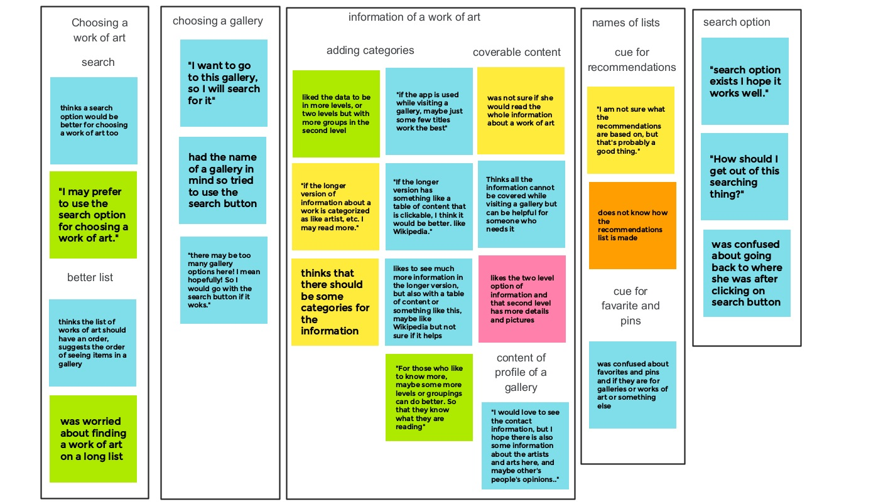
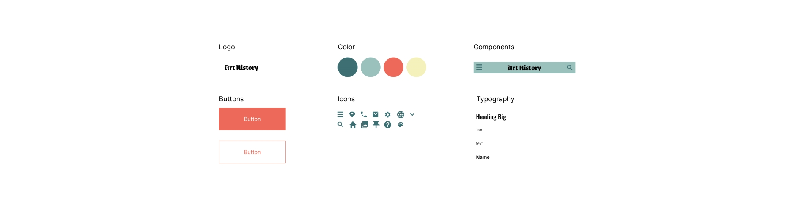
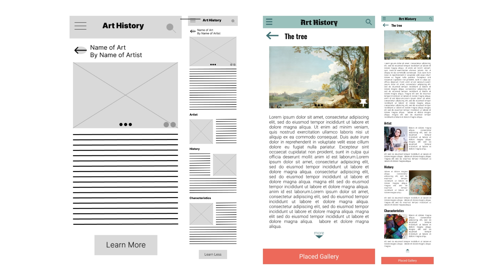
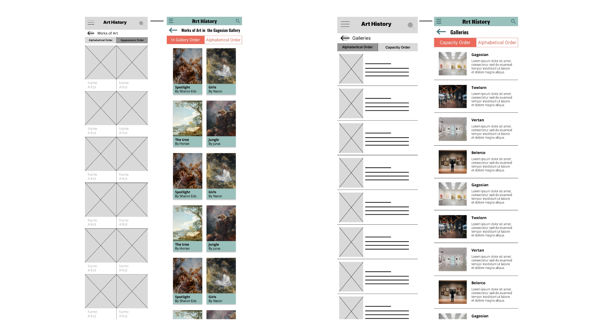

Find the gallery and piece of art you are searching for by exploring in order!
Find the gallery and piece of art you are searching for by search!
Two levels of information provided for each work of art! Read as much as you need.
Easy navigation available!
Art History is an app for anyone who likes to have information about the works of art in an art gallery. The information is provided in two levels, from which the first level is a short introduction to the most important details and the second level includes more details.
Finding enough information about each work of art in a gallery takes time and energy. Asking from the guides may be difficult because of language barriers or personal characteristics.
Designing an application which facilitates the process of gaining information about works of art for anyone with any level of familiarity with arts.
I started user research with interviews to understand the users off Art History application. A primary user group identified through research are people who are interested in art but are not professionals in this field. They like to gain information about works of art when they visit a gallery. However, reading the information written next to works of art which is usually limited or asking help from guides who may speak fast or impatiently are not proper solutions for them. Some pain points are as followed.
Needs to see a good amount of organized information in a short time.
Needs to get the information without talking to others or asking for help.
If the information is not accessible leaving the gallery is preferred.
"I am not an artist. I didn't study art. I don't know about art. However, I like art and I want to understand what I am looking at without constantly searching or asking!"
Elena is a student interested in art who needs some information about each work of art when she visits an art gallery without talking to others or searching because she wants to enjoy the gallery with less difficulty and more efficiently.
User journey map
I first did a competitive audit on three of the main competitors. The observations are collected in a Google sheet and the results are summarized in a report.
The main discovered opportunities are creating an app that is used while visiting a gallery, providing different levels of information for people with different needs and interests, and adding a description for each work of art and their characteristics to be read for visually impaired people.
Then, I used design thinking activities like How Might We and Crazy Eights to come up with design solutions for the problems that users were experiencing. Some of the questions I asked were: How might we make the process of gaining information suitable for people with different needs and interests? How might we make the process attractive, so that the user keeps using the app while visiting all works? etc. After trying to answer such questions, I moved forward to the next steps of ideation and made a goal statement:
Our Art History application will help users Gain information about each work of art in a gallery. This will affect those who are interested in art and art history, but are not comfortable asking for help from others, by providing them with a good amount of organized information and making them able to gain all they need without talking to anyone or asking for help. We will measure effectiveness by how users rate their experience after using this application.
User flow
Big picture story board
Close-up story board
Based on the information and ideas collected in the previous steps, paper wireframes for a responsive website are created. For important pages, at least four sketches are created, then best parts are chosen and starred to be used in a final version.
All paper wireframes for Homepage
Final aper wireframes for other pages
Based on the paper wireframes, digital wireframes are created using Figma. During this process, Gestalt Principles such as similarity, proximity, and common region have been considered.
A low-fidelity prototype is created using the digital frames so that a usability study can be done for fixing the issues with less price before moving to the mockups. The main flow of the application is finding a work of art by searching or exploring and reading the provided information.
The goal of this round of usability test was to see if users can complete the core tasks of the Art History Application, and if anything was difficult to use or understand.
A research study plan is prepared and after the usability study, observations are collected in a Goole sheet .
An affinity map containing grouped data from all usability study participants is created. Based on observation, themes and insights have been identified and an action plan has been made. Some findings are as followed.
> Users need to find a gallery and work of find easier.
> Users need the information to be more categorized and easily coverable.
> Users need more self-explanatory titles.
A research presentation is also created and more details including the iterations are presented there.
The affinity map of first round of usability studies
Low-fidelity prototype after iterating on designs based on the first round of usability studies
Mockups are created for the Art History application and using them, a high-fidelity prototype is created for the next round of usability studies. Some findings of the second round of usability studies are as followed.
> Users need a way to find the gallery of an art.
> “Learn More” and “Learn Less” titles are not favored by users.
Sticker sheet
High-fidelity prototype after iterating on designs based on the second round of usability studies
Some changes from the previous version of digital wireframes to the present version
 > This application will offer various languages to users for the app functions and information. Also, this application will offer different modes (Themes) to fit with user’s interest and abilities.
> Using assistive technologies like screen readers are possible in this app. For images, alternative texts will be offered and a description of appearance will be offered for each work of art.
> Icons, texts, and easy navigation are provided all over this application.
This app can help users enjoy visiting an art gallery more, even if they are not very familiar with art.
“This application is like a cheatsheet I can use while visiting an art gallery and helps me look around more confidently."
I worked on this project while going through various courses from the Google UX Design Professional Certificate. Therefore, the subject, time, budget, and facilities were limited. In a real world project, I would add more interesting features to this application with the purpose of making the experience of visiting a gallery even more interesting and interactive. Also, for this project, the texts are of great importance. Consequently, preparing the real texts and doing usability studies inside a real gallery and while visiting the works of art would be necessary.